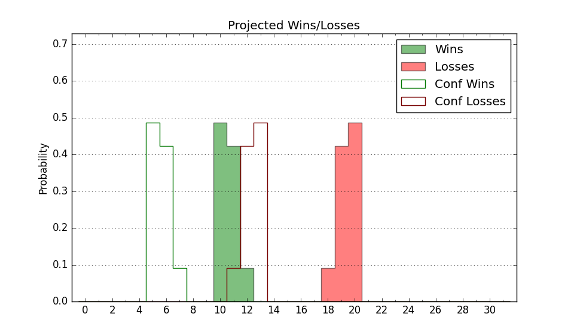

| Home | Game Probabilities | Conferences | Preseason Predictions | Odds Charts | NCAA Tournament |
| City: | Kingston, Rhode Island | |
| Conference: | Atlantic 10 (12th)
| |
| Record: | 5-11 (Conf) 10-18 (Overall) | |
| Ratings: | Comp.: -4.5 (216th) Net: -4.5 (216th) Off: 107.3 (147th) Def: 111.8 (306th) SoR: 0.0 (139th) |
| Remaining | ||||||
|---|---|---|---|---|---|---|
| Date | Opponent | Win Prob | Pred. | |||
| 3/6 | George Mason (97) | 33.8% | L 71-75 | |||
| 3/9 | @ Fordham (171) | 27.2% | L 73-80 | |||
| Previous | Game Score | |||||
| Date | Opponent | Win Prob | Result | Off | Def | Net |
| 11/6 | Central Connecticut (243) | 69.2% | W 81-70 | 1.7 | 6.4 | 8.1 |
| 11/9 | Fairfield (176) | 57.2% | W 93-80 | 0.4 | 8.2 | 8.6 |
| 11/14 | Wagner (314) | 83.1% | W 69-53 | -1.2 | 14.5 | 13.3 |
| 11/18 | (N) Northwestern (49) | 11.8% | L 61-72 | -7.2 | 2.8 | -4.4 |
| 11/19 | (N) Washington St. (34) | 9.3% | L 57-78 | -10.9 | 1.4 | -9.5 |
| 11/26 | Yale (88) | 29.4% | W 76-72 | 15.1 | -4.9 | 10.2 |
| 12/2 | @Providence (53) | 7.4% | L 69-84 | 2.1 | 0.2 | 2.4 |
| 12/6 | Brown (206) | 63.5% | L 64-67 | -12.0 | 0.7 | -11.3 |
| 12/10 | @College of Charleston (109) | 15.1% | L 70-85 | -11.9 | 6.5 | -5.4 |
| 12/16 | (N) Delaware (165) | 39.1% | L 56-67 | -20.9 | 10.8 | -10.0 |
| 12/21 | New Hampshire (254) | 70.5% | L 71-81 | -15.5 | -7.0 | -22.5 |
| 12/30 | Northeastern (240) | 68.6% | W 82-71 | -0.1 | 9.4 | 9.4 |
| 1/3 | Saint Joseph's (95) | 33.3% | W 78-74 | 0.9 | 8.8 | 9.7 |
| 1/9 | @Davidson (108) | 14.9% | W 79-74 | 15.1 | 5.9 | 21.0 |
| 1/13 | Massachusetts (85) | 29.2% | W 89-77 | 29.8 | -2.5 | 27.4 |
| 1/17 | @St. Bonaventure (67) | 8.4% | L 64-99 | -11.5 | -16.7 | -28.2 |
| 1/20 | @Dayton (22) | 4.0% | L 62-96 | 1.7 | -23.7 | -22.0 |
| 1/24 | Fordham (171) | 55.9% | L 68-71 | -13.7 | 5.4 | -8.2 |
| 1/27 | @George Mason (97) | 13.0% | L 84-92 | 25.5 | -20.5 | 5.0 |
| 1/31 | La Salle (213) | 64.2% | W 71-69 | -11.9 | 13.0 | 1.0 |
| 2/3 | Duquesne (100) | 35.3% | L 71-85 | 1.3 | -16.5 | -15.1 |
| 2/6 | @George Washington (199) | 32.6% | W 88-65 | 10.9 | 28.1 | 39.0 |
| 2/11 | @Massachusetts (85) | 10.8% | L 79-81 | 9.4 | 4.1 | 13.5 |
| 2/18 | Loyola Chicago (98) | 34.1% | L 67-77 | -3.7 | -2.9 | -6.6 |
| 2/21 | Richmond (78) | 26.6% | L 77-85 | 10.0 | -7.8 | 2.2 |
| 2/25 | @La Salle (213) | 34.5% | L 61-84 | -21.4 | -3.3 | -24.7 |
| 2/28 | @VCU (70) | 9.1% | L 67-88 | 2.2 | -5.5 | -3.3 |
| 3/2 | Saint Louis (202) | 63.0% | L 91-94 | 17.5 | -29.1 | -11.7 |
| Stats & Trends | |||||
|---|---|---|---|---|---|
| Current | Day | Week | Month | Season | |
| Composite | -4.5 | -0.6 | -1.6 | -0.2 | +2.4 |
| Comp Rank | 216 | -11 | -21 | -5 | +22 |
| Net Efficiency | -4.5 | -0.6 | -1.7 | -0.3 | -- |
| Net Rank | 216 | -11 | -22 | -7 | -- |
| Off Efficiency | 107.3 | +0.6 | -0.1 | +1.5 | -- |
| Off Rank | 147 | +5 | -7 | +9 | -- |
| Def Efficiency | 111.8 | -1.1 | -1.6 | -1.7 | -- |
| Def Rank | 306 | -22 | -35 | -21 | -- |
| SoS Rank | 101 | -7 | -3 | +3 | -- |
| Exp. Wins | 10.6 | -0.7 | -1.2 | -1.6 | -1.0 |
| Exp. Conf Wins | 5.6 | -0.7 | -1.2 | -1.6 | -0.8 |
| Conf Champ Prob | 0.0 | -- | -- | -- | -0.7 |

| Advanced Stats | ||
|---|---|---|
| Stat | Value | Rank |
| Off Eff FG % | 0.539 | 76 |
| Off Ast Ratio | 0.146 | 141 |
| Off ORB% | 0.290 | 136 |
| Off TO Rate | 0.161 | 271 |
| Off FT Ratio | 0.404 | 22 |
| Def Eff FG % | 0.520 | 229 |
| Def Ast Ratio | 0.153 | 264 |
| Def ORB% | 0.283 | 194 |
| Def TO Rate | 0.116 | 347 |
| Def FT Ratio | 0.300 | 119 |